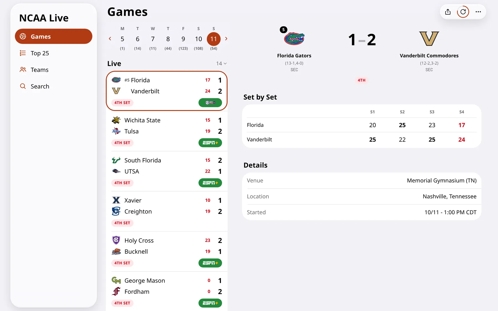
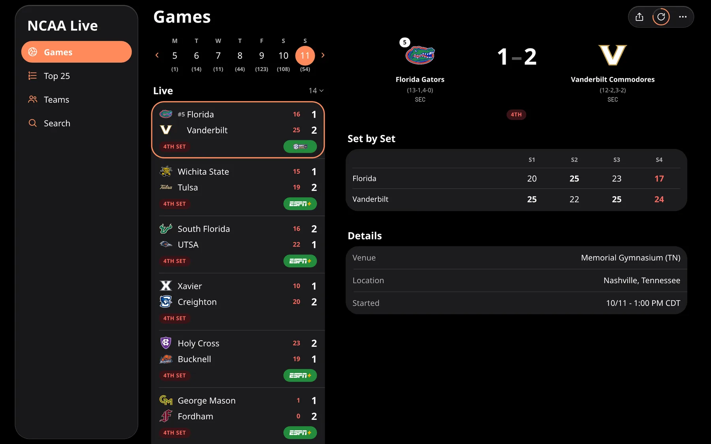
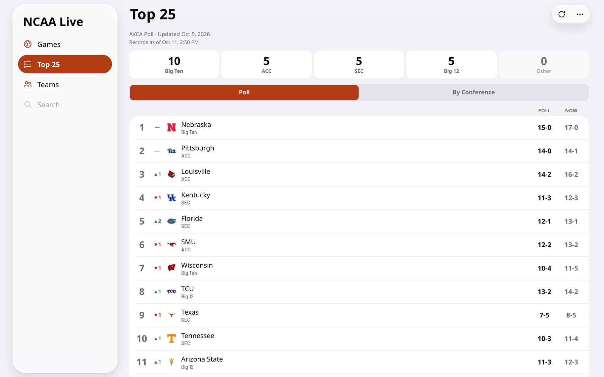
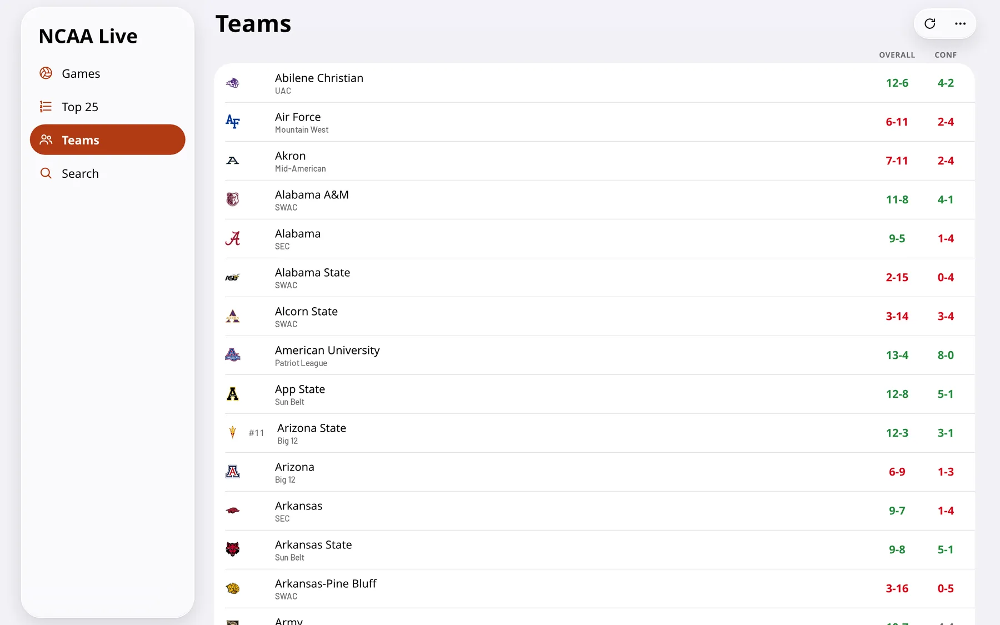
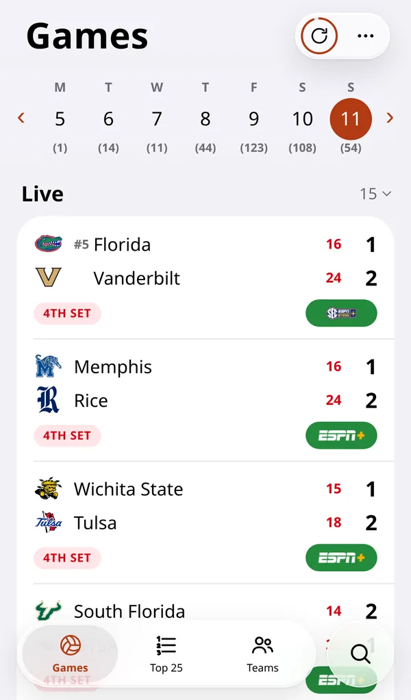
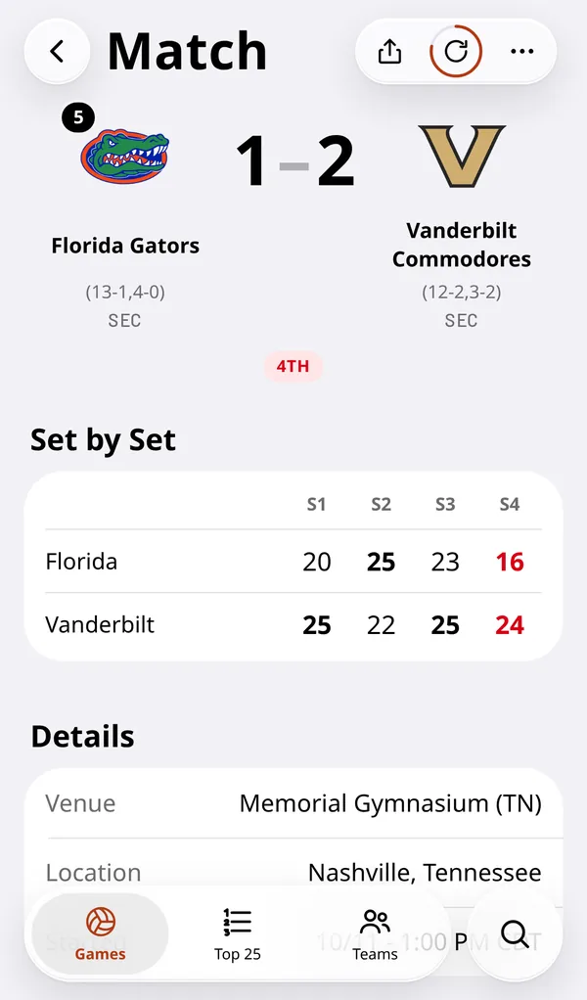
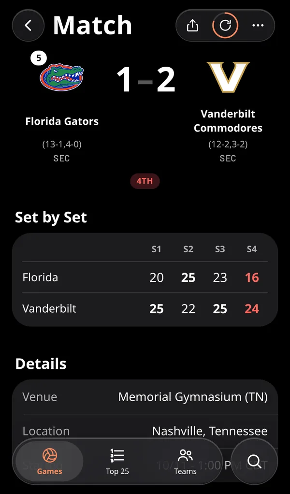
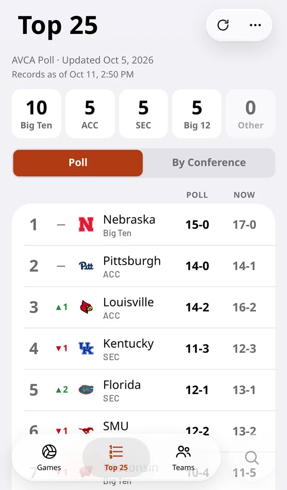

VolleyScore
Live NCAA volleyball scores, fast. Today's D1 women's and men's matches with set-by-set results that update while a game is in progress, the AVCA Top 25 broken down by conference, and every team's full season schedule.

Why it exists
Following college volleyball usually means digging through a general sports app to find the match you care about, then refreshing to see the score. VolleyScore does one thing: every D1 match for the day, live scores for every set, and a tap away from any team's season.
- Live, without refreshing. An open match updates every 15 seconds while it's in progress, including the set that's being played right now.
- One tap to watch. A Watch button links straight to the game's ESPN or Fox stream when one exists, red before the game, green while it's live.
- Search that understands conferences. Find games by team or conference, including "Top 25" and "Power 4", across a single day or a date range.
- No account, no clutter. No sign-in and no ads, and it installs to your home screen like an app.
Features
Live scoreboard
Games are grouped into Live, Upcoming and Final, with a week strip showing how many matches are on each day. Pick any match to see the score by set, the venue and the start time, with ranked teams marked by their AVCA rank.

Top 25 by conference
The AVCA poll with each team's poll-week record and current record, and movement since last week. Tiles count the ranked teams in the Big Ten, ACC, SEC and Big 12, and a By Conference view regroups the list with each conference's average rank.

Teams and schedules
Every team with its rank and its overall and conference records, colored green when winning and red when losing, and sortable by either. Tap any team, anywhere in the app, to see its full season of results and upcoming matches.

On a phone
Designed in Apple's iOS 26 Liquid Glass style: large titles and controls that float over the content as translucent glass, with a sidebar and two panes on iPads and computers. Light and dark mode, and installable as a PWA.



